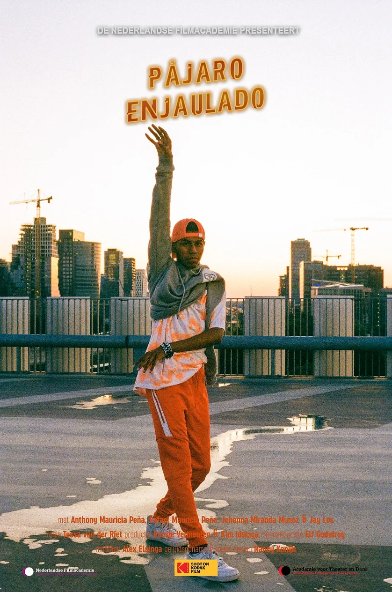

← Back to Film

PÁJARO ENJAULADO
(Caged Bird) — Documentary | 16MM | 9'25 | 2020
Pájaro Enjaulado (Caged Bird) is an observing portrait about 17-year-old Anthony who tries to break through his struggle with his self-image, identity and heartbreak through dance.
Through slice-of-life scenes, we get to know a demure teenager which contrasts with the dancing version of himself. Will he be able to rise above his insecurities?
